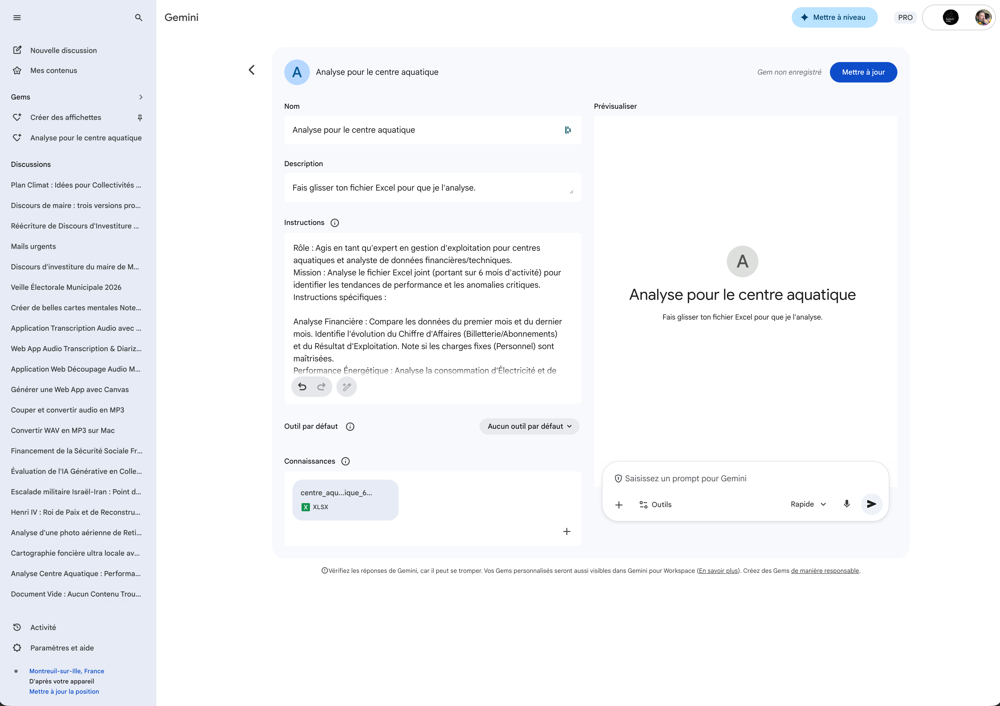

Les Gems — Créer un assistant personnalisé
Les Gems sont des assistants IA sur mesure que vous configurez une seule fois et réutilisez à volonté. Chaque Gem possède ses propres instructions, son rôle, son style de réponse et même sa base de connaissances (des fichiers que l'IA pourra consulter). C'est comme créer un collègue virtuel spécialisé : un expert financier, un rédacteur de courriers, un analyste de données… à vous de définir son profil.
Cliquez sur les pastilles orange pour découvrir chaque fonctionnalité

Partage et collaboration
Les Gems peuvent être partagés au sein de votre organisation Google Workspace. Un Gem partagé conserve ses instructions et sa base de connaissances : vos collègues peuvent l'utiliser directement, sans avoir à le reconfigurer.
Pour partager un Gem, utilisez le bouton « Créer un lien partageable » en haut de l'écran de configuration. Les utilisateurs qui ouvrent le lien obtiennent leur propre copie du Gem. Ils ne voient pas vos instructions — ils interagissent simplement avec l'assistant tel que vous l'avez configuré.
- Partage en lecture seule : les destinataires utilisent le Gem mais ne peuvent pas modifier ses instructions
- Copie indépendante : chaque utilisateur obtient sa propre copie qu'il peut personnaliser ensuite
- Pas de partage des conversations : les échanges de chacun avec le Gem restent privés
- Nombre de fichiers : vous pouvez importer jusqu'à 10 fichiers par Gem dans la base de connaissances.
- Formats acceptés : PDF, fichiers Google (Docs, Sheets, Slides), fichiers texte, CSV, Excel et autres formats courants.
- Taille maximale : chaque fichier peut peser jusqu'à 100 Mo. Les fichiers volumineux (tableaux Excel avec de nombreux onglets, PDF de centaines de pages) peuvent prendre plus de temps à être analysés.
- Pas de mise à jour automatique : si le fichier source est modifié (par exemple un Google Sheet), vous devez ré-importer manuellement la version à jour dans le Gem.